Introducción
Estas dimensiones no tienen límites definidos. Por lo tanto, hay una probabilidad de tener dimensiones superpuestas. Por ejemplo, si los miembros del equipo de la mesa de servicio (organizaciones y personas) son suministrados por un proveedor de servicios externo, se debe prestar especial atención a la seguridad de la información y la aplicación de políticas y procedimientos (información y tecnología). Además, puede encontrar estas dimensiones interactuando de manera inusual en función del nivel de complejidad e incertidumbre en que opera una organización. Si no aborda alguna de las dimensiones, puede conducir a servicios que no se pueden entregar y expectativas no cumplidas en cuanto a calidad o eficiencia.
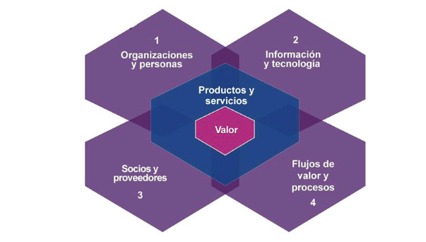Las Cuatro Dimensiones y Sistema de Valor del Servicio
Las cuatro dimensiones deben considerarse para el funcionamiento eficiente de toda el SVS. Estas cuatro dimensiones representan perspectivas que son relevantes para todo el Sistema de Valores del Servicio (SVS), incluida la cadena de valor del servicio y todas las prácticas de ITIL.
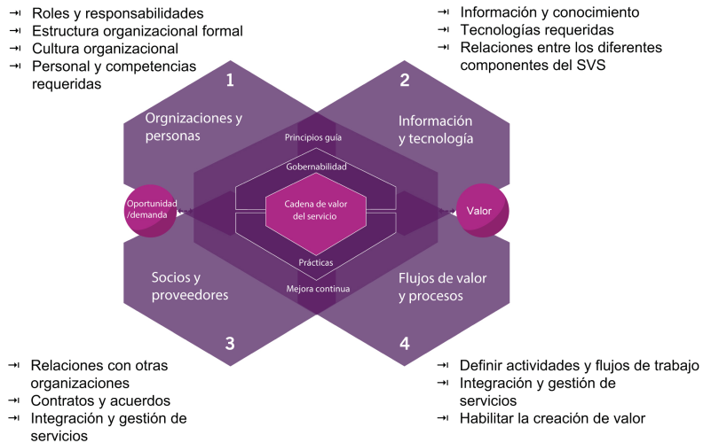Organizaciones y personas
La dimensión de Organizaciones y Personas se relaciona con los roles y responsabilidades, la estructura organizacional y la cultura, así como el personal y las competencias requeridas. Estos aspectos se relacionan con la creación, mejora y entrega de un servicio. Por lo tanto, al comparar esta dimensión con el SVS, debe considerar los mismos aspectos, pero en el contexto de la organización que actúa como proveedor de servicios.
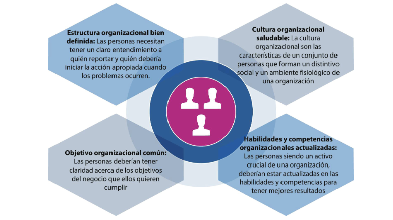Estructura Organizacional bien Definida
Las organizaciones necesitan una estructura bien definida para alinear a su personal con la estrategia organizacional general y el modelo operativo. Para respaldar la estrategia y el modelo operativo, las personas deben tener una comprensión clara de:
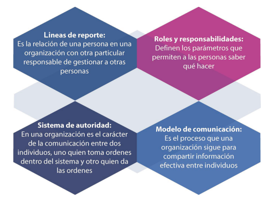Información y tecnología
Cada negocio trata con datos, que no es más que la información estructurada. En los tiempos modernos, las organizaciones utilizan la tecnología para gestionar la gran cantidad de datos. Por lo tanto, esta dimensión se centra en dos elementos, la información y la tecnología.
Información
Cuando se refiere a la parte de información de la dimensión Información y Tecnología,una organización debe responder las siguientes preguntas:
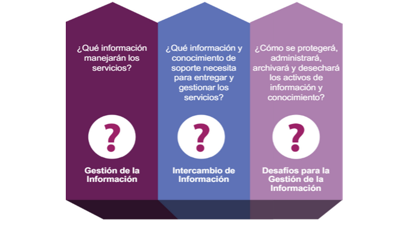Tecnología
Hoy en día, casi todos los servicios se basan en Tecnología de Información, y una organización puede elegir utilizar la tecnología en cualquier momento para sus productos o servicios. Por lo tanto, surgen muchas inquietudes cuando se elige utilizar la tecnología. Discutamos algunas de las preguntas que las organizaciones se pueden hacer.
- ¿La tecnología es compatible con la arquitectura existente de la organización y sus clients? ¿Los productos tecnológicos usados por la organización y sus partes interesadas trabajan juntos? ¿Cómo las tecnologías emergentes influyen en el servicio y la organización?
- ¿Hay temas regulatorios o de cumplimiento en las políticas de la organización y/o controles de la seguridad de la información?
- ¿La tecnología continuará siendo viable en el futuro próximo? ¿La organización aceptará el riesgo de usar tecnología antigüa o cambiará a tecnología emergente y no probada?
Factores que afectan la tecnología
Una organización debería considerer muchos factores para elegír la tecnología correcta, como la cultura organizacional y naturaleza del negocio.
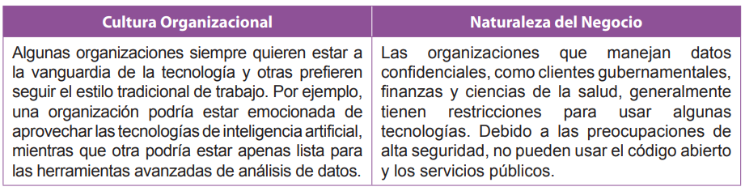Socios y proveedores
Las organizaciones trabajan con socios y proveedores a través de contratos u otros acuerdos. Este proceso incluye varios niveles de integración y formalidad. Veamos algunos de los ejemplos de relaciones entre organizaciones.
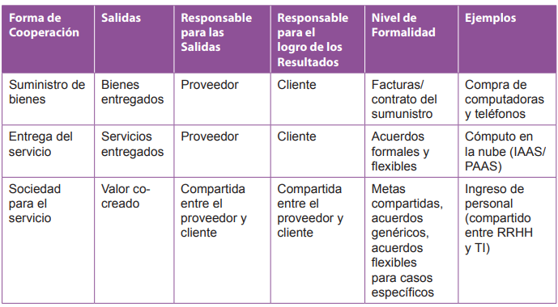Dirigiéndose a Socios y Proveedores
- Uno de los métodos para dirigirse a los socios y proveedores es la Gestión e Integración de Servicios (SIAM).
- Asegura la coordinación adecuada de las relaciones de servicios utilizando un integrador especialmente establecido.
- Una organización puede optar por delegar la gestión e integración de servicios a un socio de confianza.
Proveedores e Impacto en la Estrategia Organizacional
Cuando se trata con proveedores, varios factores pueden afectar la estrategia general de la organización, tales como:
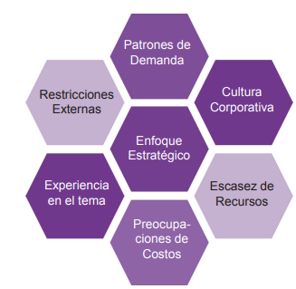Flujos de Valor y Procesos
La dimensión Flujos de Valor y Procesos se centra en la integración y coordinación tanto del SVS en general como de los productos y servicios específicos. Define las actividades, flujos de trabajo, controles y procedimientos necesarios para lograr los objetivos acordados. En otras palabras, la dimensión se centra en la organización eficiente de las diversas actividades para entregar valor a las partes interesadas. Por lo tanto, existe la necesidad de un modelo operativo que organice eficientemente las actividades clave para administrar productos y servicios.
Flujo de Valor
Un flujo de valor es una serie de pasos que una organización utiliza para crear y entregar productos y servicios a los consumidores. Un flujo de valor es una combinación de las actividades de la cadena de valor de la organización.
Características de los Flujo de Valor
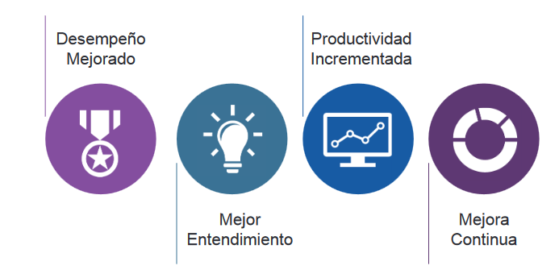Procesos
Un proceso es un conjunto de actividades interrelacionadas o interactivas que transforman entradas en salidas. Los procesos definen la secuencia de acciones y sus dependencias. Un proceso toma una o más entradas definidas y las convierte en salidas específicas. Los procesos generalmente se detallan en procedimientos, que describen quiénes están involucrados en el proceso, e instrucciones de trabajo, que explican cómo se llevan a cabo.
Factores Externos y Modelo PESTLE
Los proveedores de servicios no trabajan de manera aislada. Por lo tanto, los factores externos pueden influir en la forma en que funcionan. El modelo PESTLE ayuda a analizar estos factores.
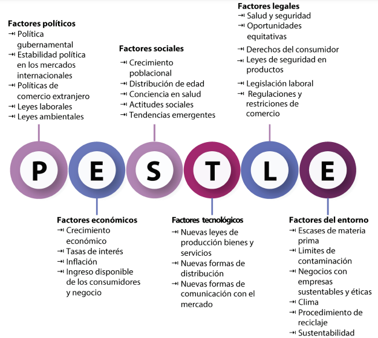Modelo PESTLE y las 4 Dimensiones
Los factores PESTLE tienen un gran impacto en la forma en que las organizaciones configuran sus recursos y abordan las cuatro dimensiones. El SVS a menudo es incapaz de controlar estos factores.
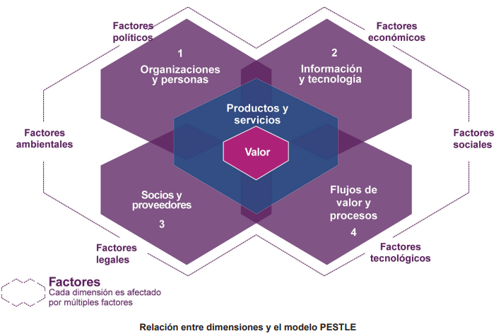